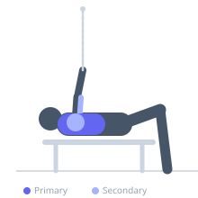

Exercise guide / Standing Cable Chest Press with Band
Standing Cable Chest Press with Band
A standing cable chest press with an additional resistance band looped around the user's back and held in both hands alongside the cable handles. The cable provides constant tension throughout the range while the band adds accommodating resistance that increases toward full extension. This dual-resistance combination produces an ascending load curve from the start through the lockout, maximizing stimulus across the entire pressing range simultaneously.
Primary muscles
pectoralis major sternal
pectoralis major clavicular
Secondary muscles
triceps long head
deltoid anterior
Stabilizers
transverse abdominis
erector spinae
Equipment
Cable Machine (Dual Pulley / Functional Trainer)
Resistance Band (Loop / Mini Band)


Starting position
- Face away from a cable machine with both cables at chest height. Loop a resistance band around your mid-back and hold both ends alongside the cable handles. Stand in a split stance for stability.
Setup
- Set both cable pulleys to chest height. Loop the band around the mid-back, gripping both ends with the cable handles in the same hands. Begin with a light band to understand the combined resistance.
Steps
- Step 1: Face away from the machine, holding cable handles plus band ends, hands at chest level.
- Step 2: Press forward, extending both arms. Feel the cable's constant tension and the band's increasing resistance.
- Step 3: At full lockout, both cable and band are at maximum tension simultaneously.
- Step 4: Return under control against the combined resistance. Repeat.
Coaching cues
- Press hard all the way to lockout — both resistances combine at the top
- Control the return — the double resistance on the way back is significant
Breathing
- Exhale on the press, inhale on the controlled return.
Range of motion
- Full elbow extension at the top. At the bottom, hands are at chest level with elbows behind the torso plane.
Tempo
- 2-0-2-1
Common mistakes
- Band that is too heavy — the cable already provides significant load; the band is an accent, not the primary load
- Leaning forward to escape the combined resistance
- Cables set at wrong height for the target muscle angle
Safety
- Ensure the band is securely positioned around the back before pressing — a slipped band can cause sudden load change
- Start with a light band and assess the combined resistance before increasing
Training
- strength: 3–6 reps
- hypertrophy: 6–10 reps
- strength: 4–5 sets
- Rest: {'strength': 180, 'hypertrophy': 120}